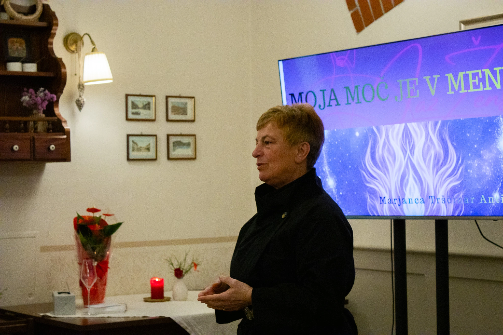
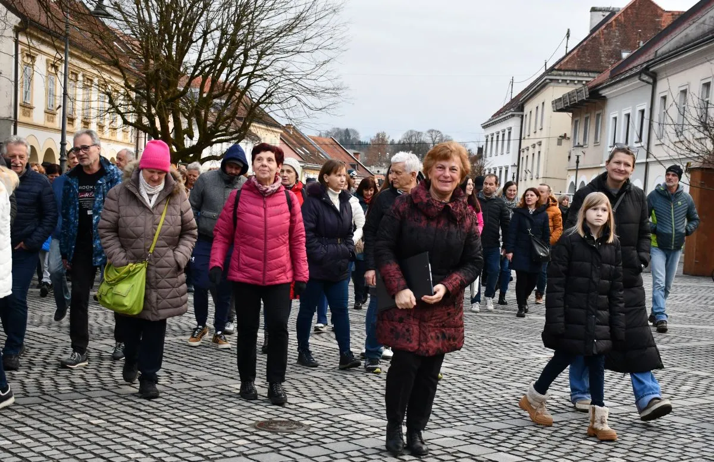

Odkrijte navdihujoče projekte in zgodbe Marjanci, ki so dokumentirane v medijih.Raziščite njeno delo, ki navdihuje in spreminja skupnosti.


Ta spletna stran uporablja piškotke za zagotavljanje pravilnega delovanja, analizo obiska in izboljšanje uporabniške izkušnje.
Več informacij najdeš v Pravilniku o zasebnosti in Politiki piškotkov.
Izberite, katere piškotke želite sprejeti. Nujno potrebni piškotki so vedno aktivirani, saj so potrebni za osnovno delovanje spletne strani.
Ti piškotki so potrebni za osnovno delovanje spletne strani in jih ni mogoče onemogočiti.
Ti piškotki omogočajo anonimno analizo obiska in uporabe spletnega mesta.
Ti piškotki omogočajo izboljšano uporabniško izkušnjo.


_page-0001.jpg)